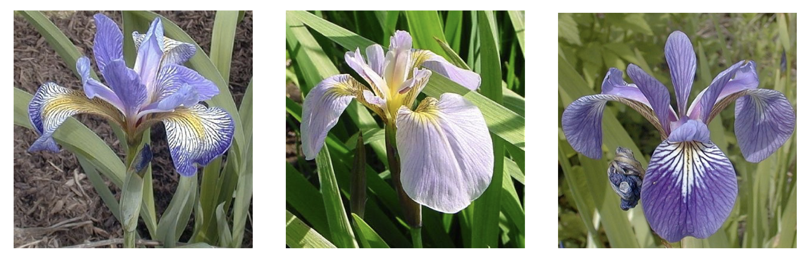

El conjunto de datos flor Iris o conjunto de datos iris de Fisher es un conjunto de datos multivariante introducido por Ronald Fisher en su artículo de 1936 The use of multiple measurements in taxonomic problems (El uso de medidas múltiples en problemas taxonómicos) como un ejemplo de análisis discriminante lineal. El conjunto de datos contiene 50 muestras de cada una de tres especies de Iris (Iris setosa, Iris virginica e Iris versicolor). Se midieron cuatro rasgos de cada muestra: el largo y ancho del sépalo y pétalo, en centímetros. Basado en la combinación de estos cuatro rasgos, Fisher desarrolló un modelo discriminante lineal para distinguir entre una especie y otra (Fuente: Wikipedia).

Especies de la flor iris
Lectura de datos
Cargamos el conjunto de datos iris desde datasets.
Resumen estadístico básico de los datos: mínimos, máximos, medias, medianas, cuartiles, etc.
Código
summary(iris_data)
Sepal.Length Sepal.Width Petal.Length Petal.Width
Min. :4.300 Min. :2.000 Min. :1.000 Min. :0.100
1st Qu.:5.100 1st Qu.:2.800 1st Qu.:1.600 1st Qu.:0.300
Median :5.800 Median :3.000 Median :4.350 Median :1.300
Mean :5.843 Mean :3.057 Mean :3.758 Mean :1.199
3rd Qu.:6.400 3rd Qu.:3.300 3rd Qu.:5.100 3rd Qu.:1.800
Max. :7.900 Max. :4.400 Max. :6.900 Max. :2.500
Species
setosa :50
versicolor:50
virginica :50
Los cuartiles se pueden ver gráficamente también, por ejemplo para Sepal.Lenght.
Separamos las instancias que se usarán como entrenamiento de los individuos de validación usando createDataPartition de caret.
Código
set.seed(0)trainIndex <-createDataPartition(iris_scaled$Species, p = .50, list =FALSE)train <- iris_scaled[trainIndex, ] val <- iris_scaled[-trainIndex, ]
Predicción con k-NN
Podemos aplicar k-NN para clasificar los datos de validación a partir de las instancias de entrenamiento.
Código
knn.pred <-knn(train[1:4], val[1:4], train$Species, k =5)
Análisis y validación
Calculadas las predicciones de los datos de validación, podemos comprobar los aciertos.
---title: "Clasificación con el conjunto de datos Iris"author: "Juan Gómez Romero"date: "10/15/2023"lang: esformat: html: code-tools: true code-fold: trueparams: n_bins: value: 10 comparar_x: value: "Petal.Length" comparar_y: value: "Petal.Width"---```{r setup, include=FALSE}knitr::opts_chunk$set(message =FALSE)library(knitr)library(tidyverse)library(datasets)library(caret)library(class)library(hrbrthemes)library(MASS)library(GGally)```Clasificación con el conjunto de datos [iris](https://www.rdocumentation.org/packages/datasets/versions/3.6.2/topics/iris).> El conjunto de datos *flor Iris* o conjunto de datos *iris* de Fisher es un conjunto de datos multivariante introducido por Ronald Fisher en su artículo de 1936 *The use of multiple measurements in taxonomic problems* (El uso de medidas múltiples en problemas taxonómicos) como un ejemplo de análisis discriminante lineal. El conjunto de datos contiene 50 muestras de cada una de tres especies de Iris (Iris setosa, Iris virginica e Iris versicolor). Se midieron cuatro rasgos de cada muestra: el largo y ancho del sépalo y pétalo, en centímetros. Basado en la combinación de estos cuatro rasgos, Fisher desarrolló un modelo discriminante lineal para distinguir entre una especie y otra (Fuente: [Wikipedia](https://es.wikipedia.org/wiki/Conjunto_de_datos_flor_iris)).# Lectura de datosCargamos el conjunto de datos iris desde [`datasets`](https://rdocumentation.org/packages/datasets/versions/3.6.2).```{r lectura}iris_data <- irishead(iris_data)```# Análisis exploratorio## CaracterísticasResumen estadístico básico de los datos: mínimos, máximos, medias, medianas, cuartiles, etc.```{r resumen}summary(iris_data)```Los cuartiles se pueden ver gráficamente también, por ejemplo para `Sepal.Lenght`.```{r cuartiles}boxplot(iris_data$Sepal.Length ~ iris_data$Species)```## HistogramaEl histograma sirve para observar la distribución de los valores de una variable (cuáles se repiten y cómo).```{r histograma}ggplot(data = iris_data) +geom_histogram(aes(x = Sepal.Length), bins = params$n_bins, color ="white", fill ="green")```## DensidadLa función de densidad es una versión suavizada del histograma, útil para datos continuos.```{r densidad}ggplot(data = iris_data) +geom_density(aes(x = Sepal.Length),color ="white", fill ="lightgray")```## DispersiónLa @fig-dispersion muestra que las clases son claramente separables a partir de las variables de predicción.```{r dispersion, echo=FALSE}#| label: fig-dispersion#| fig-cap: "Diagrama de dispersion."#| warning: falseggplot(data = iris_data) +geom_point(aes(x = .data[[params$comparar_x]], y = .data[[params$comparar_y]], color = Species, shape = Species)) +labs(x = params$comparar_x, y = params$comparar_y) +scale_color_discrete(name ="Especie", labels=c("Iris Setosa", "Iris Versicolor", "Iris Virginica")) +scale_shape_discrete(name ="Especie", labels=c("Iris Setosa", "Iris Versicolor", "Iris Virginica"))```Con [ggpairs](https://www.rdocumentation.org/packages/GGally/versions/1.5.0/topics/ggpairs) podemos mostrar varios gráficos y métricas: correlación entre variables numéricas, densidades y diagramas de dispersión.```{r pares}ggpairs(iris_data, columns =1:4, aes(color = Species, alpha =0.5))```# Clasificación con k-NN## PreprocesamientoNormalizamos los datos para el cálculo de distancias con [`preProcess`](https://rdrr.io/rforge/caret/man/preProcess.html) .```{r normalizar}sobj <-preProcess(iris_data[1:4], method=c("scale"))iris_scaled <-predict(sobj, iris_data[1:4]) %>%mutate(Species = iris_data$Species)```## Particionamiento de datosSeparamos las instancias que se usarán como *entrenamiento* de los individuos de validación usando [`createDataPartition`](https://rdrr.io/rforge/caret/man/createDataPartition.html) de [`caret`](http://topepo.github.io/caret/).```{r particionamiento_knn}set.seed(0)trainIndex <-createDataPartition(iris_scaled$Species, p = .50, list =FALSE)train <- iris_scaled[trainIndex, ] val <- iris_scaled[-trainIndex, ]```## Predicción con k-NNPodemos aplicar k-NN para clasificar los datos de validación a partir de las instancias de entrenamiento.```{r knn}knn.pred <-knn(train[1:4], val[1:4], train$Species, k =5)```## Análisis y validaciónCalculadas las predicciones de los datos de validación, podemos comprobar los aciertos.```{r validacion}(t <-table(knn.pred, val$Species))```Y calcular una tasa de acierto.```{r acierto}val_acc_rate <- (t[1,1] + t[2,2] + t[3, 3]) /nrow(val)print(paste0("% de acierto en validación: ", val_acc_rate))```Podemos marcar sobre el gráfico de `Petal.Lenght` vs `Petal.Width` los valores conocidos y las predicciones.```{r}plot_data <- val %>%mutate(prediction = knn.pred) %>%rename(known = Species) %>%pivot_longer(c("prediction", "known"))ggplot(data = plot_data) +geom_point(aes(x = .data[[params$comparar_x]], y = .data[[params$comparar_y]], shape = name, color = value)) +labs(x = params$comparar_x, y = params$comparar_y) +scale_colour_manual(name ="Species", values=c("red", "green", "blue"), labels=c("Iris Setosa", "Iris Versicolor", "Iris Virginica")) +scale_shape_manual(name ="Type", values=c(5, 3))```# Clasificación con LDA## PreprocesamientoEl primer paso con LDA es comprobar las hipótesis de partida. Más en detalle:-- Que las observaciones siguen una distribución normal para cada predictor.```{r lda_hipotesis_normal}plot_data <- iris_data %>%pivot_longer(-Species)ggplot(data = plot_data) +geom_density(aes(x=value, fill=name)) +facet_wrap(~ Species + name, scales ="free") +labs(title ="Density functions for each predictor and target value") +scale_fill_ipsum(name ="Predictor") +theme_ipsum_rc()```Cuantitativamente, podemos realizar el test de normalidad de Shapiro-Wilk con [`shapiro.test`](https://www.rdocumentation.org/packages/stats/versions/3.6.2/topics/shapiro.test).```{r lda_shapiro}my_shapiro <-function(a) {shapiro.test(a)$statistic}iris_data %>%group_by(Species) %>%summarise(across(Sepal.Length:Petal.Width, my_shapiro))```-- Que las matrices de varianza-covarianza son homogéneas.```{r lda_hipotesis_homogen}plot_data <- iris_data %>%pivot_longer(-Species)ggplot(plot_data) +geom_boxplot(aes(x=name, y=value, fill=Species)) +labs(title ="Boxplots for each predictor and target value") +scale_fill_ipsum(name ="Species") +theme_ipsum_rc()```Cuantitativamente, podemos calcular las matrices de covarianza o aplicar el test de Bartlett con [`bartlett.test`](https://www.rdocumentation.org/packages/stats/versions/3.6.2/topics/bartlett.test).```{r lda_bartlett}iris_data %>%group_by(Species) %>%group_map(~var(.x))bartlett.test(Sepal.Length ~ Species, iris_data)bartlett.test(Sepal.Width ~ Species, iris_data)bartlett.test(Petal.Length ~ Species, iris_data)bartlett.test(Petal.Width ~ Species, iris_data)```## Particionamiento de datos```{r particionamiento_lda}set.seed(0)trainIndex <-createDataPartition(iris_scaled$Species, p = .50, list =FALSE)train <- iris_data[trainIndex, ] val <- iris_data[-trainIndex, ]```## Predicción con LDAPodemos crear el modelo LDA para clasificar los datos de validación a partir de las instancias de entrenamiento.```{r lda_modelo}model.lda <-lda(Species ~ Sepal.Length + Sepal.Width + Petal.Length + Petal.Width, data = train)model.ldalda.pred.train <-predict(model.lda, train[1:4])lda.pred.val <-predict(model.lda, val[1:4])```Observar la transformación de los datos usados para crear el modelo.```{r lda_transformacion}plot_data <- lda.pred.train$x %>%as_tibble() %>%mutate(Species = train[[5]])ggplot(data = plot_data) +geom_point(aes(x = LD1, y = LD2, color = Species)) +scale_colour_manual(name ="Species", values=c("red", "green", "blue"), labels=c("Iris Setosa", "Iris Versicolor", "Iris Virginica")) %>%labs(title ="Data transformed after LDA") +theme_ipsum_rc()```## Analisis y validaciónFinalmente, podemos calcular las métricas en validación.```{r lda_metricas}(t <-table(lda.pred.val$class, val$Species))val_acc_rate <-sum(diag(t)) /nrow(val)print(paste0("% de acierto en validación: ", val_acc_rate))```Y visualizar las predicciones, tanto con los datos de entrenamiento como los de validación.```{r lda_prediccion_train}plot_data <- lda.pred.train$x %>%as_tibble() %>%mutate(known = train[[5]]) %>%mutate(prediction = lda.pred.train$class) %>%pivot_longer(c("prediction", "known"))ggplot(data = plot_data) +geom_point(aes(x = LD1, y = LD2, shape = name, color = value)) +scale_colour_manual(name ="Species", values=c("red", "green", "blue"), labels=c("Iris Setosa", "Iris Versicolor", "Iris Virginica")) +scale_shape_manual(name ="Type", values=c(5, 3)) +labs(title ="Train data + predictions transformed after LDA") +theme_ipsum_rc()``````{r lda_prediccion_val}plot_data <- lda.pred.val$x %>%as_tibble() %>%mutate(known = val[[5]]) %>%mutate(prediction = lda.pred.val$class) %>%pivot_longer(c("prediction", "known"))ggplot(data = plot_data) +geom_point(aes(x = LD1, y = LD2, shape = name, color = value)) +scale_colour_manual(name ="Species", values=c("red", "green", "blue"), labels=c("Iris Setosa", "Iris Versicolor", "Iris Virginica")) +scale_shape_manual(name ="Type", values=c(5, 3)) +labs(title ="Validation data + predictions transformed after LDA") +theme_ipsum_rc()```# Clasificación con QDAPor último, creamos un clasificador con QDA usando el método [`qda`](https://www.rdocumentation.org/packages/MASS/versions/7.3-58.3/topics/qda) de [`MASS`](https://www.rdocumentation.org/packages/MASS/versions/7.3-58.3).```{r qda}model.qda <-qda(Species ~ Sepal.Length + Sepal.Width + Petal.Length + Petal.Width, data = train)qda.pred.train <-predict(model.qda, train[1:4])qda.pred.val <-predict(model.qda, val[1:4])(t <-table(qda.pred.val$class, val$Species))val_acc_rate <-sum(diag(t)) /nrow(val)print(paste0("% de acierto en validación: ", val_acc_rate))```# LDA y QDA en `caret````{r lda_qda_caret}suppressWarnings({ lda.model <-train(train[1:4], train$Species,method="lda", preProcess =c("center", "scale"),tuneLength =10,trControl =trainControl(method ="cv"))})lda.modelsuppressWarnings({ qda.model <-train(train[1:4], train$Species,method="qda", preProcess =c("center", "scale"),tuneLength =10,trControl =trainControl(method ="cv"))})qda.model```